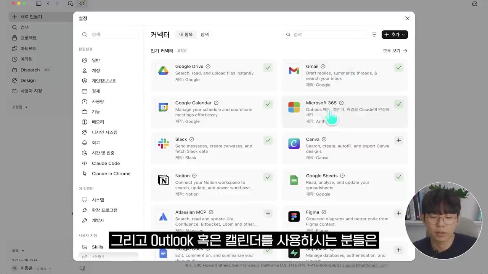
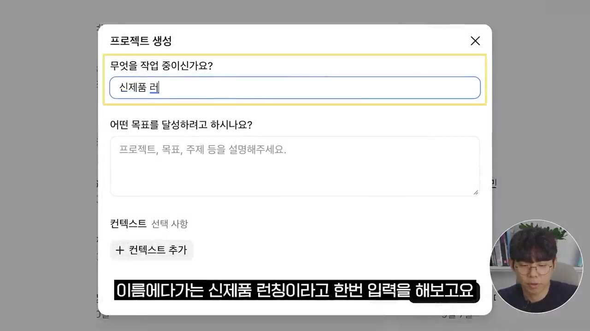
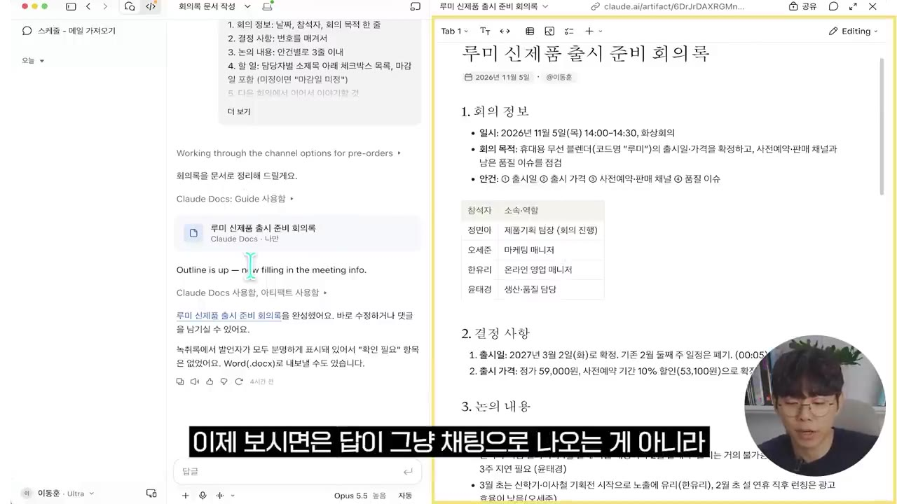
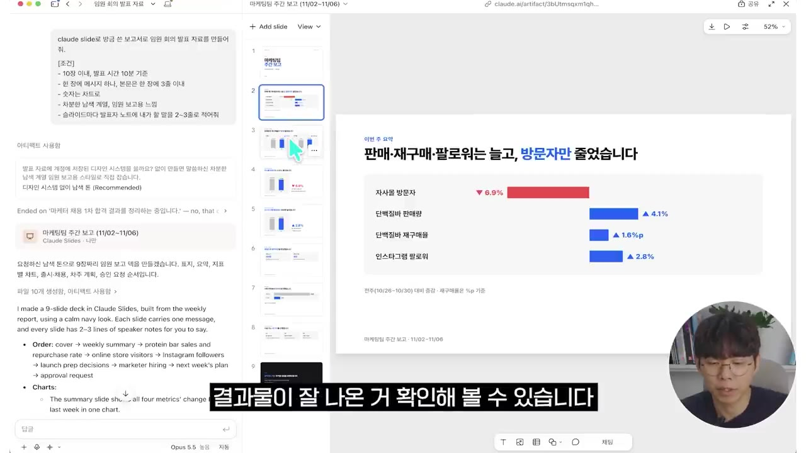
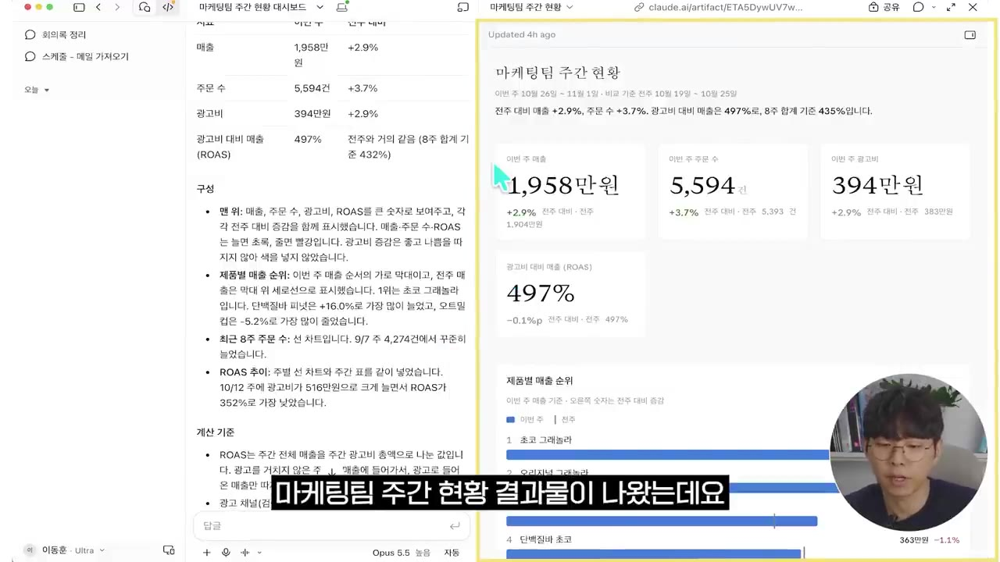
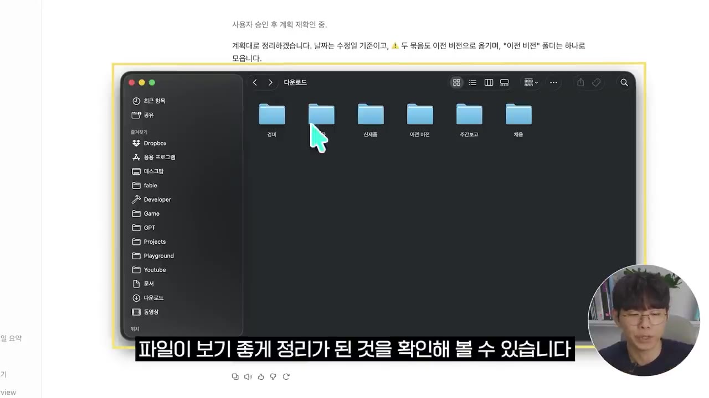

클로드가 완전히 달라졌습니다. 직장인이 꼭 알아야 할 16가지 기능 총정리 (2026 최신)
▶ 원본 영상 보기한눈에 보기
- 클로드는 9월 16일 채팅·코워크 통합, Docs·슬라이드 추가, 10월 8일 디자인 무료 플랜 확대·대시보드 추가로 두 달 새 크게 바뀌었다.
- 커넥터(Gmail·캘린더·슬랙 등)와 예약 작업을 결합하면 매일 아침 메일·일정 브리핑이 자동으로 만들어진다.
- 메모리·프로젝트·스킬로 "나에 대한 정보 / 작업별 맥락 / 일하는 방식"을 저장해 반복 설명을 없앨 수 있다.
- Docs·슬라이드·디자인·대시보드로 문서, 발표자료, 시안, 현황판을 클로드 안에서 만들고 공유한다.
- 폴더 접근(영수증 정산·파일 정리)과 Claude in Chrome으로 PC 안팎의 반복 작업까지 맡긴다.
이런 분께 도움이 됩니다
- 클로드를 "질문하고 복사하는 챗봇" 정도로만 쓰던 직장인.
- 메일 브리핑, 주간 보고서, 발표자료, 데이터 정리 같은 반복 업무를 자동화하고 싶은 분.
핵심 내용
먼저 알아둘 용어 5가지
- AI 에이전트: 일을 맡기면 답변에서 끝나지 않고 결과물까지 직접 만든다. 채팅은 "물어보면 답해 주고 끝"이다. (0:58)
- 커넥터: 클로드가 Gmail·구글 캘린더·슬랙·노션 등 외부 앱과 데이터를 주고받는 연결 통로. USB-C 케이블처럼 한 번 꽂아 두면 계속 쓴다.
- 예약 작업(스케줄): "매일 아침 8시에 이 작업을 해 줘"를 알아서 실행한다.
- 클로드 서버에서 돌아가므로 컴퓨터를 꺼도 실행된다.
- 유료 플랜에서만 쓸 수 있다.
- 메모리: 대화에서 자동 수집한 나에 대한 정보(회사·업무·선호 말투 등). 무료 플랜에서도 기본으로 켜져 있다.
- 스킬: 클로드에게 주는 업무 매뉴얼. 메모리가 "나에 대한 정보"라면 스킬은 "일하는 방식"이다.
연결·자동화: 메일 브리핑, 예약 작업, 슬랙
- 커넥터로 Gmail(또는 Outlook·Microsoft 365)과 캘린더를 연결한 뒤 "어제 오후 6시 이후 메일과 일정을 보고 브리핑을 만들어 줘"라고 요청한다. 급한 답장·광고 등이 분류돼 나온다. (3:31, 4:43)
- 같은 브리핑을 "평일 아침 7시 50분마다 만들어 달라"고 예약 작업으로 등록하면 노트북을 덮어 둬도 아침에 도착한다. (5:11)
💡 한 번 연결하고 한 번 예약하면, 이후 매일 아침 수작업이 사라진다.
- 슬랙도 같은 방식으로 연결해 채널 대화를 정리·요약한다. 슬랙을 안 쓰면 테스트 데이터를 만들어 달라고 해 실습할 수 있고, 팀즈 사용자는 Microsoft 365 연결로 대체 가능하다.

🔁 메일 브리핑 자동화 순서
- 커넥터 연결
- 브리핑 요청
- 예약 걸기
- 1커넥터 연결
플러스 → 커넥터 → 커넥터 추가 → 커넥터 둘러보기에서 Gmail(또는 Microsoft 365) 선택 후 클로드에 연결·계정 선택
- 2브리핑 요청
어제 오후 6시 이후 메일·캘린더를 보고 브리핑을 만들어 달라고 입력
- 3예약 걸기
평일 아침 7시 50분 자동 실행으로 예약 작업 등록
나를 기억시키기: 메모리·프로젝트
- 메모리: 설정 → 메모리에서 "채팅 검색 및 참조"와 "채팅에서 메모리 생성"을 켜 둔다. 켜면 클로드가 내가 누구이고 무슨 일을 하는지 자동 정리하고, "나에 대해 알려 줘"라고 물으면 그것을 읽고 답한다. (6:22)
- 프로젝트: 같은 주제의 대화를 한곳에 모은 독립 공간.
- 생성: 프로젝트 탭 → 새 프로젝트 이름 입력(예: 신제품 런칭) → 컨텍스트(파일·폴더·구글 드라이브·노션 문서) 추가 → 프로젝트 생성. (7:11)

- 지침은 이 프로젝트에서 항상 지킬 규칙, 컨텍스트는 참고 자료다.
- 프로젝트 메모리는 해당 프로젝트 안에서만 쓰이고, 일반 메모리는 모든 대화에서 쓰인다.
- 이후 "보도자료 써 줘"만 해도 컨텍스트와 지침을 바탕으로 결과가 나온다. (8:47)
- 음성 모드: 초기 화면 우측의 음성 모드로 말로 조작한다. 모바일 앱에서도 지원돼 손을 못 쓸 때 유용하다.
스킬: 반복 업무의 매뉴얼화
- 잘 쓴 주간 보고서를 올리고 "주간 보고서 스킬을 만들어 줘"라고 요청 →
/위클리 리포트같은 스킬이 생성된다(이름은 다를 수 있음). 저장 후/위클리 리포트와 이번 주 자료만 넣으면 같은 양식으로 결과가 나온다. (12:51) - 팁: 예약 작업과 결합해 "매주 금요일 오후 4시에 주간 보고서 스킬로 초안 작성"을 걸어 두면 프롬프트 입력도 필요 없다.
💡 반복 업무 자동화의 핵심은 스킬 + 예약 작업의 조합이다.
결과물 만들기: Docs·슬라이드·디자인·대시보드
| 기능 | 성격 | 예시 |
|---|---|---|
| 클로드 Docs | 글 위주 문서 | 녹취록 → 회의록 |
| 클로드 슬라이드 | PPT 발표자료 | 보고서 → 임원회의 자료 |
| 클로드 디자인 | 배치·시각 중심 | 원페이지 소개서, 앱 화면 시안 |
| 클로드 대시보드 | 데이터 연결된 현황판 | 마케팅 팀 주간 현황 |
- Docs: 결과가 채팅이 아니라 오른쪽에 실제 문서로 열린다. (9:05)

- 일부분만 수정 가능, 할 일 체크박스 지원, 공유 링크로 팀원 초대·실시간 수정.
- 내보내기: Word·PDF·구글 Docs·노션.
- 슬라이드: "클로드 슬라이드로 방금 쓴 보고서를 임원회의 발표자료로 만들어 줘"라고 조건과 함께 요청. 재생, 특정 영역 댓글 프롬프트, 공유 가능. (14:18)

- 디자인: 폰트·색상·제품 사진을 직접 수정하고 PDF·PNG로 내보내거나 공유한다. (15:19)
- 대시보드: 구글 시트 등 커넥터 또는 CSV·엑셀 업로드 데이터에 연결돼, 데이터가 바뀌면 차트도 자동 갱신된다.

- 매출 데이터 분석(12번): 엑셀을 올리고 "월별 제품 매출을 분석해 차트로" 요청 → 차트와 증감 분석, 엑셀·Word 다운로드까지 가능. 대시보드와 달리 데이터와 실시간 연결되진 않는다.
조사·분석: 딥 리서치와 구글 시트 애드온
- 딥 리서치: 일반 검색은 몇 개만 보고 답하지만, 딥 리서치는 수십 개 페이지를 돌며 출처 달린 보고서를 쓴다. 숫자마다 출처가 붙는다. 호출은
/딥리서치또는 플러스 → 리서치. 시간은 더 걸린다. (10:27)💡 절대 틀리면 안 되는 조사에는 딥 리서치를 쓴다.
- 구글 워크스페이스 애드온: 사내 보안 때문에 데스크탑 앱을 못 쓰는 경우에 유용. 구글 시트 → 확장 프로그램 → 부가기능 설치하기에서 클로드 검색·설치 → 확장 프로그램 → 클로드 → 오픈 클로드(로그인 필요). 고객 문의 500건을 배송·환불·맛과 품질·가격·기타로 분류하고 화난 건은 '긴급' 체크, 유형별 건수 시트까지 만들었다. 엑셀은 Microsoft 365 애드인으로 동일하게 가능. (16:23)
내 PC와 브라우저를 맡기기
- 폴더 접근(코워크): 프로젝트 또는 폴더 → 폴더 추가 → 항상 허용.

- Claude in Chrome: 크롬 확장 프로그램. 클로드가 내 크롬에서 클릭·메뉴 선택·입력을 사람처럼 수행한다. (22:28)
- 딥 리서치는 검색해 글을 읽는 것, Chrome 확장은 직접 사이트를 조작하는 것.
- 영상 예시는 다섯 페이지를 열어 데이터를 가져오게 했고, 못 찾은 항목은 못 찾았다고 답했다.
따라 해보기
준비물
- 클로드 데스크탑 앱, 유료 플랜(예약 작업), Gmail 또는 Outlook 계정.
- 소요 시간: 10분 내외 (자막상 불분명).
단계별 방법
🔁 메일 브리핑 자동화
- 커넥터 연결
- 연결 확인
- 브리핑 요청
- 예약 등록
따라 할 수 있는지 점검
- ✅ 바로 따라 할 수 있음: 커넥터 연결 경로, 요청 문장, 예약 작업 등록 흐름.
- ⚠️ 3단계 「브리핑 요청」: 영상의 순서·주의사항 프롬프트 원문이 화면에만 나오고 말로는 안 나옴 → 영상 4:43 화면 또는 설명란 오픈채팅방 강의자료 참고.
- ⚠️ 4단계 「예약 등록」: 예약 작업은 유료 플랜 필요, 정확한 플랜명·가격은 영상에 없음 → 공식 사이트 요금 페이지 확인.
- ⚠️ 프로젝트·스킬·대시보드 등: 실습 자료·프롬프트가 오픈채팅방에서만 제공 → 영상 설명란 링크 참고.
- ❓ 영상 속 일부 기능 명칭(코워크 통합 등)은 자막 인식 오류가 많아 정확한 메뉴명은 실제 화면에서 확인 필요.
확인 방법
- 플러스 → 커넥터에 파란 불, 좌측 "예약됨"에 스케줄 표시, 다음 날 아침 브리핑 도착.
막히면
- 실행해도 못 찾는 정보는 클로드가 "못 찾았다"고 답한다(Chrome 예시). 숫자는 딥 리서치의 출처로 직접 확인한다.
기억할 숫자·인용
- 9월 16일: 채팅·코워크 통합, Docs·슬라이드 추가 / 10월 8일: 디자인 무료 플랜 확대, 대시보드 추가.
- 예약 작업 예시: 평일 7시 50분 브리핑, 매주 금요일 오후 4시 주간 보고서 초안.
- 딥 리서치 업무: "경쟁사 제품 5개 가격·마케팅 포인트".
생각해볼 점
- 영상은 기능 소개 중심이라 정확도·한계(오분류, 환각)는 거의 다루지 않는다. 결과물은 검수가 필요하다.
- 메일·폴더·크롬 접근은 개인·회사 정보 권한을 넘기는 일이다. 사내 보안 정책을 먼저 확인하는 것이 좋다.
- 기능별 무료/유료 범위가 영상에서 일부만 언급된다(예약 작업은 유료, 디자인은 무료 확대). 나머지는 직접 확인이 필요하다.
바로 해볼 일
- 설정 → 메모리에서 두 옵션(채팅 검색·참조, 메모리 생성)이 켜져 있는지 확인
- Gmail 커넥터를 연결하고 어제 이후 메일 브리핑 한 번 받아보기
- 자주 쓰는 보고서 한 편으로 스킬 만들어 보기